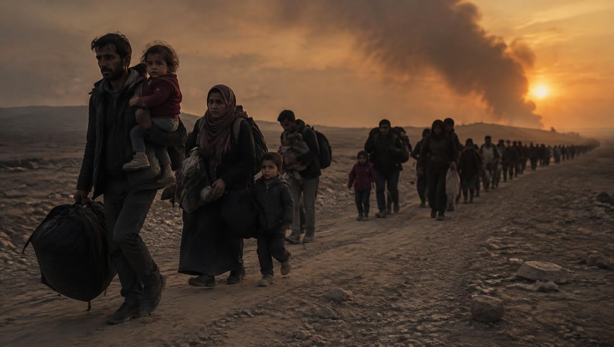
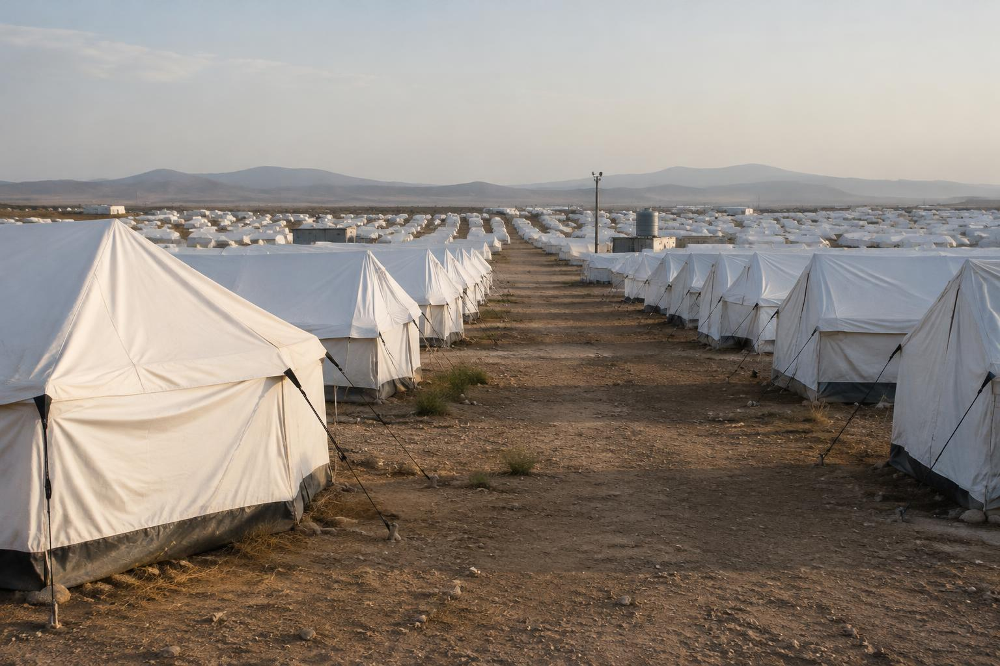
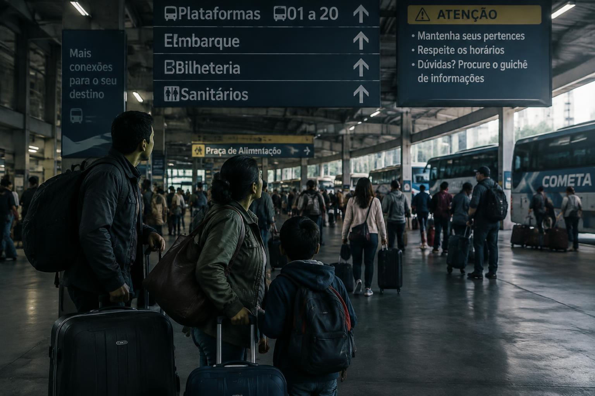
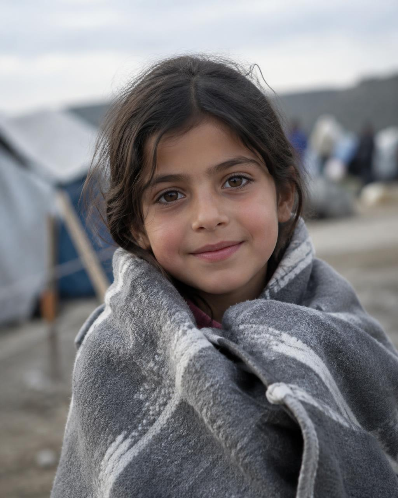
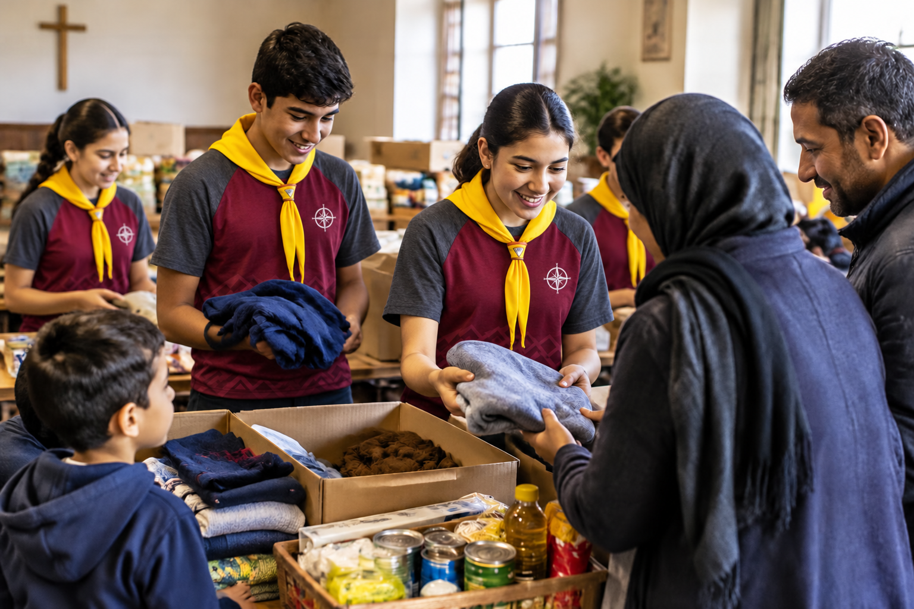

Ninguém escolhe deixar tudo para trás. Esta é a história de milhões de pessoas em fuga — e de como um Desbravador pode ser abrigo no caminho delas.
// DOSSIÊ 01 — QUEM É QUEM
Na imprensa elas aparecem misturadas, mas no direito internacional cada uma descreve uma situação diferente — e garante proteções diferentes.
Pessoa que está fora do seu país de origem por um fundado temor de perseguição devido à sua raça, religião, nacionalidade, grupo social ou opinião política, ou por grave e generalizada violação de direitos humanos e conflitos armados, e que não pode ou não quer voltar. (Convenção da ONU de 1951; Lei brasileira nº 9.474/1997.)
Pessoa obrigada a fugir de casa por conflitos, violência, perseguição ou desastres, mas que permanece dentro do próprio país. Continua, em tese, sob a proteção do mesmo governo — que muitas vezes é a causa da fuga. São hoje o maior grupo de pessoas deslocadas no mundo.
Pessoa que se muda para outro país para viver ali, normalmente por escolha — em busca de trabalho, estudo, reunião familiar ou melhores condições de vida. Pode, em regra, voltar ao seu país em segurança. Sua situação é regida pelas leis de migração de cada nação.
// DADOS ACNUR · RELATÓRIO TENDÊNCIAS GLOBAIS
pessoas deslocadas à força no mundo no fim de 2024 — cerca de 1 em cada 67 habitantes do planeta.
são deslocados internos, que fugiram mas continuam dentro do próprio país.
são refugiados, sob mandato do ACNUR e da UNRWA.
das pessoas deslocadas são crianças.
// DOSSIÊ 02 — POR QUE ELES FOGEM

“Ninguém deixa sua casa, a menos que a casa seja a boca de um tubarão.”— Warsan Shire, poeta britânico-somali, no poema “Home”
// DOSSIÊ 03 — A CHEGADA
Ao chegar a um novo país, muitas vezes só com a roupa do corpo, as necessidades imediatas são urgentes e se acumulam:


// DOSSIÊ 04 — COLOQUE-SE NO LUGAR
Imagine acordar amanhã num país onde você não entende nenhuma palavra. Você não consegue ler o cardápio, pedir informação, explicar ao médico onde dói, nem entender o que o professor diz. As pessoas comem coisas diferentes, se cumprimentam de outro jeito, têm outras regras e outra fé.
Provavelmente você sentiria medo, solidão e insegurança. Sentiria saudade dos amigos, da comida da sua mãe, da sua igreja, do seu quarto. Talvez sentisse vergonha por depender dos outros, frustração por não conseguir se expressar e tristeza por tudo o que perdeu. Poderia até sofrer preconceito por ser “de fora”.
Ao mesmo tempo, haveria esperança e gratidão: um sorriso, uma palavra no seu idioma ou um convite para almoçar valeriam ouro. Esse exercício de empatia é o primeiro passo para ajudar de verdade.
// DOSSIÊ 05 — QUEM AJUDA
No mundo, no Brasil e na sua comunidade, várias instituições trabalham para proteger e integrar refugiados e deslocados internos.
Agência da ONU para Refugiados (UNHCR), criada em 1950. Protege refugiados e deslocados, coordena campos, registra pessoas, oferece abrigo e busca soluções duradouras como o reassentamento. Ganhou dois Prêmios Nobel da Paz (1954 e 1981).
Agência Adventista de Desenvolvimento e Recursos Assistenciais, presente em mais de 100 países. Atua em emergências, distribui alimentos, água e kits, mantém espaços amigos da criança e apoia a integração. No Brasil, participa do acolhimento de venezuelanos em Roraima.
Ação Solidária Adventista, o braço de serviço comunitário de cada igreja local. Arrecada e distribui roupas, cestas básicas e móveis, e é a parceira natural do Clube de Desbravadores para ajudar famílias refugiadas da sua cidade.
Organização Internacional para as Migrações, agência da ONU que apoia migrantes com transporte, saúde, documentação e a interiorização (realocação para outras cidades).
Protege crianças deslocadas: vacinação, nutrição, escolas emergenciais e reencontro de famílias separadas.
Comitê Internacional da Cruz Vermelha: atua em zonas de guerra, ajuda deslocados internos e reconecta familiares separados pelo conflito.
Médicos Sem Fronteiras: atendimento médico em campos, rotas migratórias e zonas de conflito.
Órgão do governo brasileiro (Ministério da Justiça) que analisa e decide os pedidos de refúgio no país.
As Cáritas de São Paulo e do Rio de Janeiro são referência histórica no acolhimento, orientação jurídica e cursos de português para refugiados.
Desde 2018, a força-tarefa humanitária do governo federal, Forças Armadas, ONU e ONGs (incluindo a ADRA) recebe venezuelanos na fronteira de Roraima com três eixos: ordenamento da fronteira (documentação e vacinação), abrigamento e interiorização — levar as pessoas a outras cidades com mais oportunidades.
A Lei nº 9.474/1997 foi considerada pela ONU uma das mais modernas do mundo, pois ampliou o conceito de refugiado para incluir vítimas de grave e generalizada violação de direitos humanos. Venezuelanos, sírios, haitianos (com visto humanitário), afegãos e ucranianos estão entre os grupos acolhidos.
// DOSSIÊ 06 — MISSÃO
Em poucas palavras: acolhendo como Jesus acolheria. Ajuda prática + amizade sincera. Algumas ideias:

“O estrangeiro que peregrina entre vós será como o natural, e amá-lo-ás como a ti mesmo, pois estrangeiros fostes na terra do Egito.”— Levítico 19:34
// DOSSIÊ 07 — OUVIR QUEM VIVEU
Procure alguém de outro país que vive na sua cidade — na igreja, na escola, no comércio. Pergunte com respeito e sem pressa. Este é um exemplo de relato típico, baseado em experiências reais de venezuelanos acolhidos no Brasil:
Perguntas sugeridas: De onde você veio e por quê? Como foi a viagem? O que foi mais difícil no começo? O que mais te surpreendeu aqui? Do que você sente mais falta? Quem te ajudou? Que conselho daria para quem quer ajudar?
— O que foi mais difícil ao chegar?
“O idioma. Português parece espanhol, mas não é! Eu não conseguia entender o médico nem preencher os papéis.”
— Que contrastes você notou?
“Aqui todo mundo se abraça e conversa rápido. A comida é diferente: sinto falta da arepa. E o calor de Roraima é bem mais forte.”
— Como você se adaptou?
“Fiz curso de português na igreja, consegui emprego pela interiorização e meus filhos fizeram amigos na escola. Uma família da igreja nos deu móveis.”
— O que você diria aos Desbravadores?
“Um ‘bem-vindo’ muda o dia de quem está longe de casa.”
// DOSSIÊ 08 — COMPARTILHAR
Prepare um breve relatório para o Clube, a igreja ou a escola mostrando o que aprendeu. Pode ser uma apresentação de slides, um vídeo, uma encenação (ex.: simular uma fronteira onde os “refugiados” só podem levar 3 itens), um mural de fotos ou uma exposição.
Inclua: as definições, as principais causas, os números atuais, os desafios enfrentados (idioma, documentos, trabalho, preconceito, traumas, separação familiar) e o que as organizações fazem.
• Porque são pessoas, não estatísticas — e qualquer um pode um dia precisar de refúgio.
• Porque
a Bíblia manda amar o estrangeiro, e o próprio Jesus foi refugiado no Egito (Mateus 2:13-15).
•
Porque informação combate o preconceito e a xenofobia.
• Porque refugiados integrados
enriquecem a comunidade com trabalho, cultura e fé.
• Porque soluções nascem quando cada um faz
sua parte.
// DOSSIÊ 09 — EM CAMPO
O último passo é sair do papel: encontrar um refugiado ou deslocado interno na sua região e ajudá-lo junto com a ASA da sua igreja. Registre com fotos (sempre com autorização da família e sem expor crianças ou dados pessoais) e escreva uma descrição do auxílio prestado.
RELATÓRIO DE AUXÍLIO — MODELO
Data: ___/___/______
Clube / Unidade: ____________________
Parceria: ASA da Igreja ______________
Família atendida (país de origem): _______
Necessidades identificadas: ___________
Auxílio prestado: _____________________
[ espaço para foto ]
O que aprendi: ________________________
// ARQUIVO EXTRA